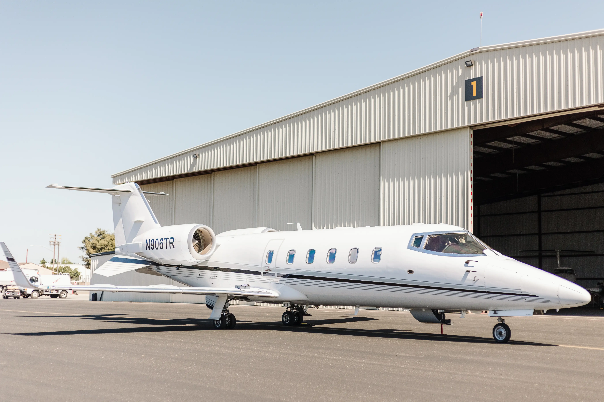

<div class="media-flex">
  <div class="row flex-row-reverse justify-content-between media-flex__row media-flex__row_lear">
    <div class="col-xl-8 col-lg-8 col-sm-12 mb-lg-5">
      <div class="media-flex__img-wrap">
        
      </div>
    </div>
    <div
      class="col-xl-4 col-lg-4 col-sm-12 d-flex flex-column justify-content-center media-flex__text media-flex__text_fleet ">
      <h3 class="h2-sub text-uppercase text-lg-start text-sm-center mb-lg-3 mb-sm-3 mb-mob-1">
        LEAR 60
      </h3>
      <p class="desc">
        The Learjet 60 is an elite mid-sized business class jet. The cabin of the Learjet 60 is the biggest yet in the
        Learjet family and is designed to have the most space where it counts. With its fast cruise speeds and extended
        range, a non-stop flight from LA to NY is no problem!
      </p>
    </div>
  </div>
</div>